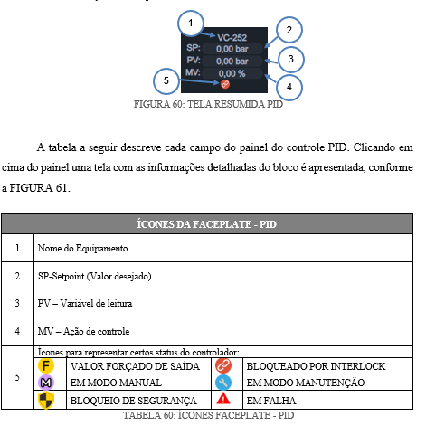
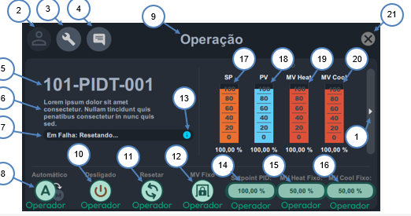
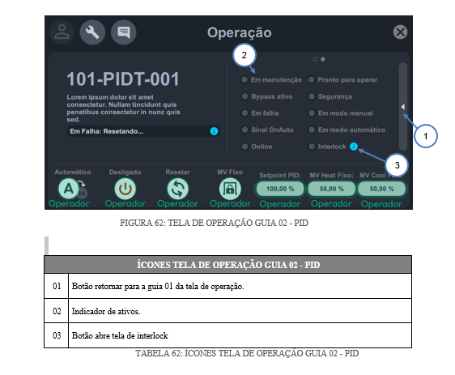
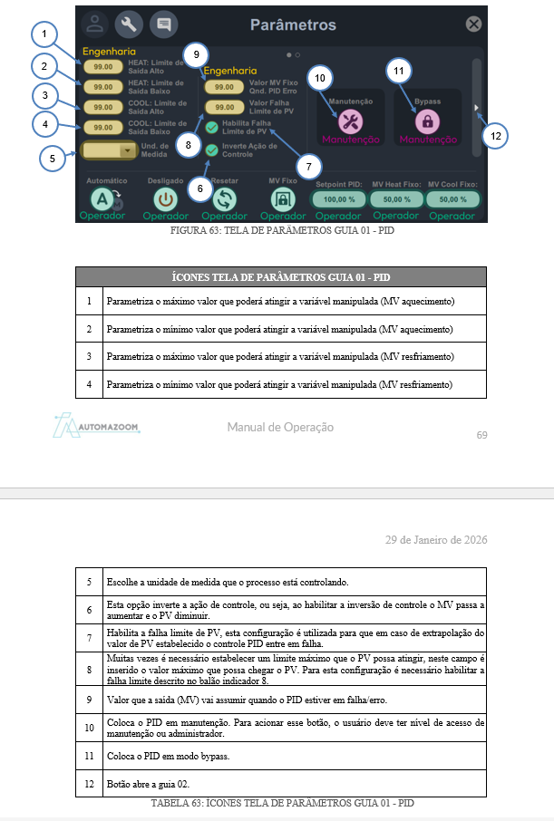
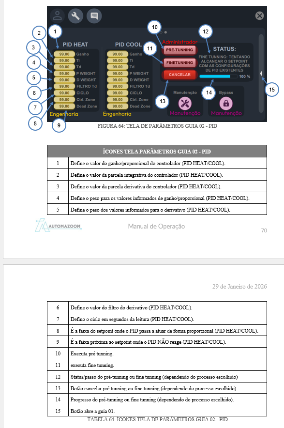
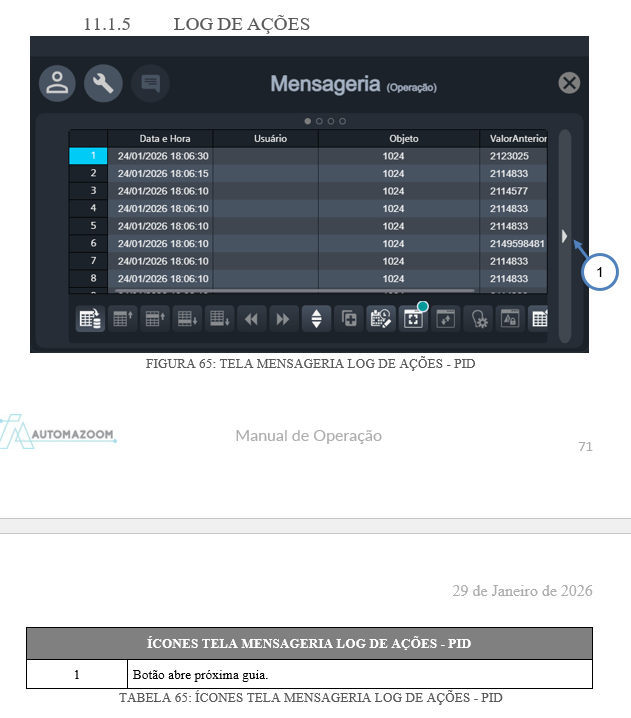
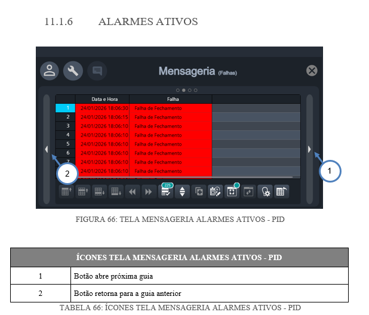
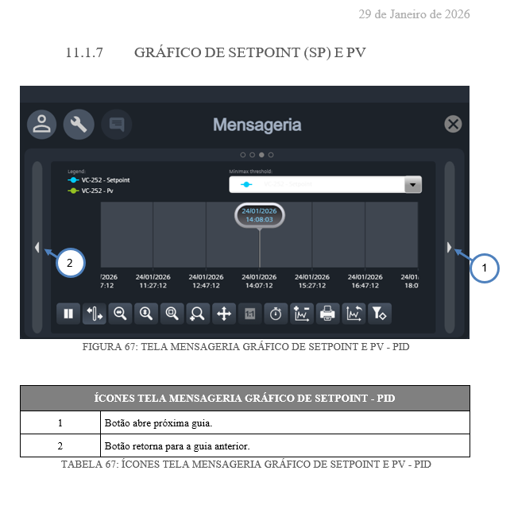
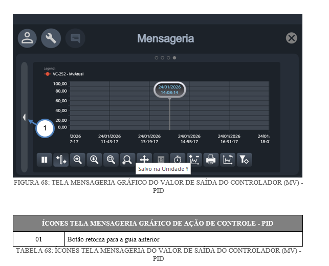
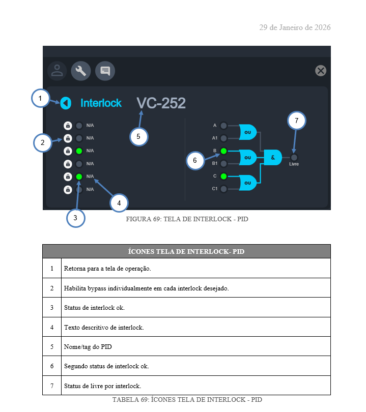

11.1.1 - FACEPLATE
Para cada sistema de controle PID instanciado na aplicação, há um painel com o resumo das informações do respectivo controle, conforme a FIGURA 60.

FIGURA 60: TELA RESUMIDA PID
A tabela a seguir descreve cada campo do painel do controle PID. Clicando em cima do painel, uma tela com as informações detalhadas do bloco é apresentada, conforme a FIGURA 61.
| ITEM | DESCRIÇÃO |
|---|---|
| 1 | Nome do equipamento. |
| 2 | SP - Setpoint (valor desejado). |
| 3 | PV - Variável de leitura. |
| 4 | MV - Ação de controle. |
| 5 | Ícones de status: valor forçado de saída, bloqueado por interlock, modo manual, modo manutenção, bloqueio de segurança e falha. |
TABELA 60: ÍCONES FACEPLATE - PID
Voltar ao menu11.1.2 - OPERAÇÃO
Na aba de operação é possível monitorar graficamente os valores de interesse do controlador:
- SP: Setpoint, valor desejado.
- PV: Valor de processo monitorado.
- MV: Saída do controlador, variando de 0% a 100%.
Também é possível monitorar os status do controlador, alterar o modo de operação entre manual e automático, resetar falhas, definir o setpoint e configurar um valor fixo para a saída de controle quando estiver em modo manual.
As FIGURAS 61 e 62 apresentam as telas de operação e suas respectivas guias.

FIGURA 61: TELA DE OPERAÇÃO GUIA 01 - PID
| ITEM | DESCRIÇÃO |
|---|---|
| 1 | Botão abre a próxima guia. |
| 2 | Botão abre a tela de operação. |
| 3 | Botão abre a tela de configuração. |
| 4 | Botão abre a tela de mensageria. |
| 5 | Nome do controlador. |
| 6 | Descrição do controlador. |
| 7 | Status do controlador. |
| 8 | Seleção do modo de operação: manual ou automático. |
| 9 | Nome da tela atual. |
| 10 | Botão para ligar o controlador em modo manual. |
| 11 | Botão de reset de falhas. |
| 12 | Botão para forçar um valor fixo de saída em modo manual. |
| 13 | Botão abre a tela de diagnóstico. |
| 14 | Campo para configurar o setpoint desejado. |
| 15 | Campo para configurar o valor de saída fixo. |
| 16 | Valores monitorados (SP, PV e MV) em formato decimal. |
| 17 | Valor do SP em formato gráfico. |
| 18 | Valor do PV em formato gráfico. |
| 19 | Valor do MV de aquecimento em formato gráfico. |
| 20 | Valor do MV de resfriamento em formato gráfico. |
| 21 | Botão para fechar a popup. |
TABELA 61: ÍCONES TELA DE OPERAÇÃO GUIA 01 - PID

FIGURA 62: TELA DE OPERAÇÃO GUIA 02 - PID
| ITEM | DESCRIÇÃO |
|---|---|
| 01 | Botão retorna para a guia 01 da tela de operação. |
| 02 | Indicador de ativos. |
| 03 | Botão abre a tela de interlock. |
TABELA 62: ÍCONES TELA DE OPERAÇÃO GUIA 02 - PID
Voltar ao menu11.1.3 - PARÂMETROS
As funcionalidades da tela de parâmetros só podem ser utilizadas por usuários do nível de manutenção e acima.
Nesta tela é possível colocar o controlador em modo manutenção ou bypass, definir a unidade de medida do PID e alterar configurações do controlador.
Na primeira guia é possível configurar os limites máximo e mínimo da saída de controle (MV), definir um valor fixo para a saída em caso de falha, inverter a ação de controle e habilitar falhas para valores de PV fora dos limites estabelecidos.
Na segunda guia estão os parâmetros do PID, que só podem ser alterados por usuários do nível de engenharia e acima. Também é possível executar os comandos de pré-tunning e fine tuning, que buscam automaticamente valores adequados para o controlador.
Voltar ao menu11.1.3.1 - PARÂMETROS - GUIA 01

FIGURA 63: TELA DE PARÂMETROS GUIA 01 - PID
| ITEM | DESCRIÇÃO |
|---|---|
| 1 | Define o valor máximo da variável manipulada (MV aquecimento). |
| 2 | Define o valor mínimo da variável manipulada (MV aquecimento). |
| 3 | Define o valor máximo da variável manipulada (MV resfriamento). |
| 4 | Define o valor mínimo da variável manipulada (MV resfriamento). |
| 5 | Seleciona a unidade de medida do processo. |
| 6 | Inverte a ação de controle. |
| 7 | Habilita a falha por limite de PV. |
| 8 | Define o valor máximo permitido para o PV. |
| 9 | Define o valor que a saída (MV) assumirá quando o PID estiver em falha. |
| 10 | Coloca o PID em modo manutenção. |
| 11 | Coloca o PID em modo bypass. |
| 12 | Botão abre a guia 02. |
TABELA 63: ÍCONES TELA DE PARÂMETROS GUIA 01 - PID
Voltar ao menu11.1.3.2 - PARÂMETROS - GUIA 02

FIGURA 64: TELA DE PARÂMETROS GUIA 02 - PID
| ITEM | DESCRIÇÃO |
|---|---|
| 1 | Define o ganho proporcional do controlador (PID HEAT/COOL). |
| 2 | Define a parcela integrativa do controlador. |
| 3 | Define a parcela derivativa do controlador. |
| 4 | Define o peso do ganho proporcional. |
| 5 | Define o peso dos valores derivativos. |
| 6 | Define o filtro do derivativo. |
| 7 | Define o ciclo de leitura em segundos. |
| 8 | Define a faixa do setpoint onde o PID atua proporcionalmente. |
| 9 | Define a faixa próxima ao setpoint onde o PID não reage. |
| 10 | Executa o pré-tunning. |
| 11 | Executa o fine tuning. |
| 12 | Indica o status ou passo do pré-tunning ou fine tuning. |
| 13 | Botão para cancelar o processo de ajuste. |
| 14 | Indica o progresso do pré-tunning ou fine tuning. |
| 15 | Botão abre a guia 01. |
TABELA 64: ÍCONES TELA DE PARÂMETROS GUIA 02 - PID
Voltar ao menu11.1.4 - MENSAGERIA
A aba de mensageria dos controladores PID é dividida em quatro guias:
- Log de ações dos usuários.
- Alarmes ativos.
- Gráfico da última hora de operação dos valores de setpoint (SP) e PV.
- Gráfico do valor atual de saída do controlador (MV).
11.1.5 - LOG DE AÇÕES

FIGURA 65: TELA MENSAGERIA LOG DE AÇÕES - PID
| ITEM | DESCRIÇÃO |
|---|---|
| 1 | Botão abre a próxima guia. |
TABELA 65: ÍCONES TELA MENSAGERIA LOG DE AÇÕES - PID
Voltar ao menu11.1.6 - ALARMES ATIVOS

FIGURA 66: TELA MENSAGERIA ALARMES ATIVOS - PID
| ITEM | DESCRIÇÃO |
|---|---|
| 1 | Botão abre a próxima guia. |
| 2 | Botão retorna para a guia anterior. |
TABELA 66: ÍCONES TELA MENSAGERIA ALARMES ATIVOS - PID
Voltar ao menu11.1.7 - GRÁFICO DE SETPOINT (SP) E PV

FIGURA 67: TELA MENSAGERIA GRÁFICO DE SETPOINT E PV - PID
| ITEM | DESCRIÇÃO |
|---|---|
| 1 | Botão abre a próxima guia. |
| 2 | Botão retorna para a guia anterior. |
TABELA 67: ÍCONES TELA MENSAGERIA GRÁFICO DE SETPOINT E PV - PID
Voltar ao menu11.1.8 - GRÁFICO DO VALOR DE SAÍDA DO CONTROLADOR (MV)

FIGURA 68: TELA MENSAGERIA GRÁFICO DO VALOR DE SAÍDA DO CONTROLADOR (MV) - PID
| ITEM | DESCRIÇÃO |
|---|---|
| 01 | Botão retorna para a guia anterior. |
TABELA 68: ÍCONES TELA MENSAGERIA DO VALOR DE SAÍDA DO CONTROLADOR (MV) - PID
Voltar ao menu11.1.9 - INTERLOCK
A tela de interlock (FIGURA 69) mostra o status dos intertravamentos do sistema. É possível verificar a condição de cada sinal através do ícone ao lado do texto do interlock.
A indicação estará na cor azul, com um ponto de exclamação, quando ativada. Quando desativada, ficará com a cor próxima à das letras e sem o ponto de exclamação.
Caso todos os sinais estejam ativos, a indicação de "LIVRE" será acionada.

FIGURA 69: TELA DE INTERLOCK - PID
| ITEM | DESCRIÇÃO |
|---|---|
| 1 | Retorna para a tela de operação. |
| 2 | Habilita bypass individualmente em cada interlock desejado. |
| 3 | Status de interlock OK. |
| 4 | Texto descritivo do interlock. |
| 5 | Nome/tag do PID. |
| 6 | Segundo status de interlock OK. |
| 7 | Status de livre por interlock. |
TABELA 69: ÍCONES TELA DE INTERLOCK - PID
Voltar ao menu